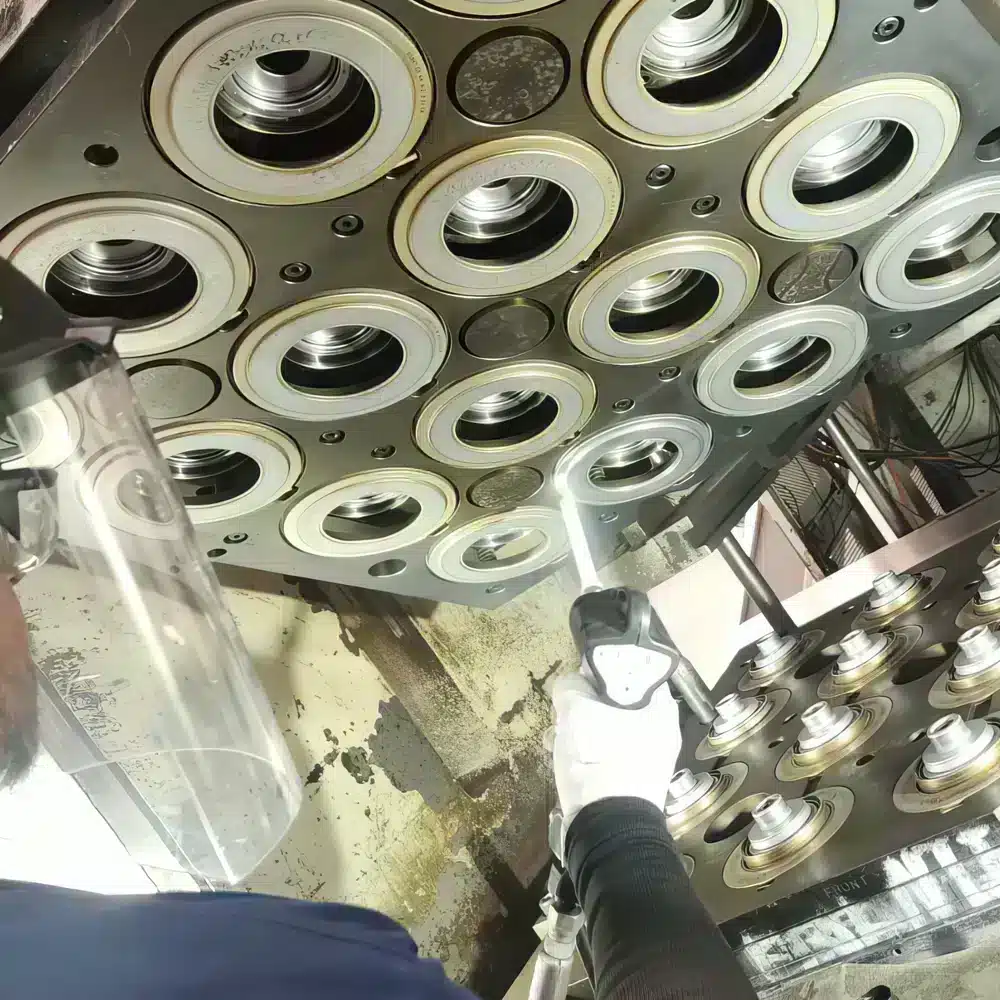

01
PLASTIC & RUBBER MOLD CLEANING
사출 · 성형 금형 세척


금형의 정밀한 표면은 유지하면서
생산 잔류물을 제거합니다.
자동차의 내·외장재와 씰, 가스켓, 커넥터 등 다양한 부품은 플라스틱과 고무 성형공정을 통해 생산됩니다.
생산이 반복되면 금형 표면에는 이형제, 수지, 안료와 성형 과정에서 발생한 잔류물이 축적될 수 있습니다. 이러한 오염은 성형 품질과 금형 관리에 영향을 줄 수 있기 때문에 정기적인 세척이 필요합니다.
드라이아이스 세척은 비마모성 세정 방식의 특성을 이용해 금형의 표면과 형상을 최대한 유지하면서 축적된 오염물을 제거하는 데 활용됩니다. 설비와 금형의 조건에 따라 금형을 완전히 분해하거나 충분히 냉각한 뒤 세척해야 하는 시간을 줄일 수 있는 경우도 있습니다.
대표 대상
- 플라스틱 사출금형
- 고무 성형금형
- 우레탄 성형금형
- 정밀 성형금형